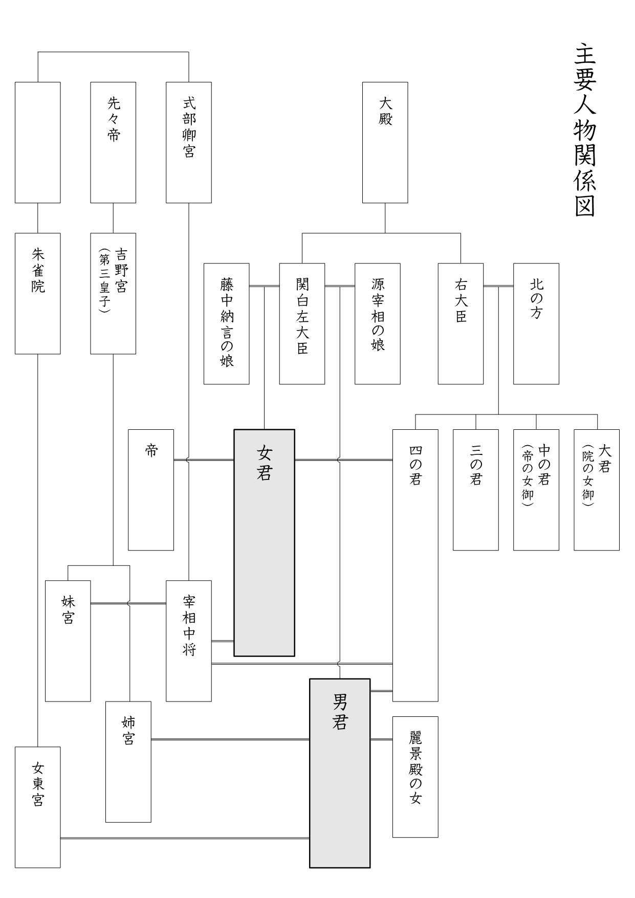

| あらすじで読む とりかへばや物語 | |
| 水谷悠歩 | |
| 水谷 悠歩 (2018) | |
あらすじで読む とりかへばや物語
水 谷 悠 歩
目次
平安時代、ある貴族の男に瓜二つの兄妹が生まれた。
兄は少女のように、妹は少年のように育ったため、父親はいつも「とりかへばや（二人を取り換えたい）」と悩んでいたが変わらぬまま成人し、それぞれ女装・男装して朝廷に仕えた。
二人は貴族社会で交流するうちに異性と関係を持ち、結婚や出産を経験した後に、周囲に気づかれぬまま互いの立場を入れ替えることに成功した。
最終的に兄は関白左大臣、妹は皇后となり、二人の子どもたちも栄華を極めた。
第一章
何事にも優れていた権大納言 に、顔が非常によく似た兄妹が生まれた。
男君（兄）は可憐な少女のように、女君（妹）は元気な少年のように育った。
権大納言はいつも「とりかへばや（二人を取り換えたい）」と嘆いていた。
第二章
男君と女君は成人した。
女君は男姿のまま侍従 として朝廷に仕え始めた。
父・権大納言は帝から男君の入 内 を熱心に勧められたが、引っ込み思案を理由に断り続けた。
女君は自分が他人と異なることを意識するようになった。
素晴らしい容姿でありながら女性に興味を示さない女君は、女たちの憧れの的だった。
女君の友人である式部卿宮 の中将 は非常に好色 な男で、どんな女にも声を掛けた。
体調を崩した帝は譲位して院になり、東宮 が帝になった。また、院の一人娘が東宮（女東宮）になった。
父は関白左大臣になった。
女君は三位中将 になり、程なく権中納言 になった。
式部卿宮の中将は宰相中将 になった。
女君は叔父・右大臣の娘である四の君と結婚した。
二人の間に肉体関係はなかったが、仲のいい夫婦だった。
第三章
男君は女姿のまま尚侍 として女東宮に仕え始めた。
やがて男君は女東宮と肉体関係を持つようになった。
女君は麗景殿 の女と出会い、親交を深めた。
第四章
女君と男君は立派な大人になった。
宰相中将は四の君を垣間見 し、押し倒して手込めにした。
第五章
宰相中将は四の君と逢瀬 を重ね、やがて四の君は懐妊した。
四の君の不貞を知った女君は、仏道に励むようになった。
第六章
その昔、先々帝の第三皇子である吉野宮 は遣唐使として中国に渡ると、才能を認められて筆頭大臣の娘と結婚し、二人の娘が産まれた。しかし、若くして妻が死去すると権力争いに巻き込まれ、身の危険を感じて娘たちとともに日本に逃げ帰り、吉野に身を隠して現在に至る。
出家を望む女君は吉野宮のことを知り、詳しい話を聞くために吉野に赴いた。
女君の人となりや学識、人相に感動した吉野宮は、娘たちの将来を女君に託すことを決意した。
女君は吉野宮から様々な教えを受けた。
第七章
女君は吉野宮の二人の娘と対面し、姉宮と将来を約束し合った。
吉野での滞在を終え、女君は都に戻った。
第八章
女君と四の君の関係は、さらによそよそしくなった。
第九章
女君は幾度も吉野に足を運んだ。
四の君は宰相中将にそっくりの女子を産んだ。
二人の関係を確信した女君は、ますます吉野に心を寄せた。
第十章
宰相中将は尚侍 （男君）のいる部屋に忍び入ったが未遂に終わった。
宰相中将は四の君との逢瀬を続けた。
それでも心が満たされぬ宰相中将は、女君に愚痴をこぼしているうちに衝動的に押し倒し、相手が女だと知って手込めにした。
宰相中将は理想的な女を手に入れたことを喜んだが、一方の女君は、四の君に飽き足らず自分にまで手を出した相手をまったく信用しなかった。
第十一章
女君は不本意に思いつつも、宰相中将との関係を断ち切ることができなかった。
やがて身ごもった女君は密かに出産するため、宰相中将に打ち明けた。
宰相中将は「早く男姿を捨てて女として生きるべきだ」と説得したが、女君は決めかねていた。
四の君が再び懐妊したことを知った女君は、宰相中将への不信感をさらに募らせ、出産後に現世を捨てる覚悟を固めた。
第十二章
女君は次第に身重になり、人々との別れの時期が迫っていた。
帝の御前で見事な漢詩を読んだ女君は右大将 に昇進し、同時に宰相中将も権中納言になった。
第十三章
権中納言は女君を迎えるための屋敷を宇治に用意した。
出産が間近に迫った女君は、親しい人々に別れの挨拶に回った。
ある夜、女君は権中納言の手引きで密かに都を抜け出して宇治に移り、世間から姿を消した。
帝をはじめ、誰もが右大将（女君）の失踪を悲しんだ。
人々の間で「右大将の失跡は四の君と権中納言の不貞が原因である」と噂が流れ、事実だと知った四の君の父（右大臣）は娘を勘当して屋敷から追い出した。
困り果てた四の君は、宇治にいる権中納言に助けを求める手紙を送った。
第十四章
宇治で暮らすうちに女君の髪は伸び、女らしい姿になった。
四の君からの手紙を受け取った権中納言はすぐさま都に戻り、しばらく戻ってこなかった。
女君は相手の軽薄さに愛想を尽かしていた。
第十五章
男君（尚侍 ）は女君の捜索を決意すると、物 忌 みと称して左大臣邸に戻り、長く伸びた髪を切り落として男姿になった上で都を出た。
第十六章
女君と吉野宮の関係を知った男君は吉野に向かった。
道中、男君は宇治で女君と顔を合わせたが、互いに姿が変わっていたため兄妹であると確証が持てぬまま別れた。
男君は吉野宮と対面し、女君から再び連絡が来ることになっていると聞いて安心した。
連絡が来るまでの間、男君は吉野に滞在することにした。
第十七章
女君は無事に男子（宇治の若君）を産んだ。
安心した権中納言は、出産を控えている四の君に付き添った。
女君は若君の乳母 に、吉野宮へ手紙を届けるように頼んだ。
手紙を受け取った吉野宮と男君は、女君の無事を喜んだ。
若君の乳母の手引きで、男君と女君は宇治で対面した。
男君は女君に互いの入れ替わりを提案したが、今の姿を人に見られたくない女君は承諾しなかった。
第十八章
父（左大臣）は夢の中で不思議な僧と出会い、「二人の子どもは間もなくあるべき姿に戻って栄華を極める」と告げられた。
翌朝、帰京した男君は父に事情を話した。
女君は若君を置いて宇治から去ることを決意した。
四の君は第二子（女子）を出産した。
女君は権中納言の不在を見計らい、若君を残したまま後ろ髪を引かれる思いで吉野に向かった。
男君は自分と女東宮の関係を女君に説明し、改めて入れ替わりを頼んだ。
事情を理解した女君は提案を受け入れ、準備のために互いが持つ情報を交換し合った。
吉野宮の娘たち（姉宮・妹宮）は、男君と女君の区別がつかないまま接触した。
男君に押し倒された姉宮は始めは驚いたが、次第に心を開いていった。
第十九章
女君が急に姿を消したことを知った権中納言は、悲しみに打ちひしがれた。
出産後、四の君が生死の境をさまよっていることを知った父・右大臣は勘当を解き、寝込んでいる屋敷に出向いて介抱した。
四の君は回復し、右大臣邸に戻った。
男君と女君は都に戻ることにしたが、姉宮は吉野を離れる決心がつかなかった。
帰京した二人は父と再会し、これまでの経緯を説明した。
人々は右大将の無事を喜んだが、一方で姿を消していた理由を噂し合った。
第二十章
帝は右大将（男君）を呼んで無事を喜んだが、入れ替わりに気づかなかった。
男君は女東宮が体調を崩していることを知って悲しんだ。
女君は別れた若君を思い出しながら、父の屋敷で悄然 と過ごした。
男君は初めて顔を合わせた四の君に惹かれて肉体関係を持ったが、あくまで吉野の姉宮を正妻と考え、四の君は第二の妻として扱った。
権中納言は茫然としたまま宇治で若君と一緒に暮らしていたが、右大将の帰京を知ると慌てて若君を連れて都に戻った。
権中納言は参内 して遠くから右大将（男君）を観察したが、入れ替わっていることに気づかなかった。
権中納言は失踪の恨みを綴った手紙を右大将に送ったが、まともに相手にされなかった。
第二十一章
女君は尚侍 として参内 したが、女東宮をはじめ誰も入れ替わりに気づかなかった。
女君は他の女房とともに女東宮の出産準備を進めた。
女君の手引きで男君（右大将）は女東宮と対面し、これまでの事情を語った。
男君が身重の自分を見捨て、他の女たちと関係を結んでいたことを知った女東宮は、相手の薄情さを非難した。
女東宮に対する愛情が薄れた男君は、面倒だと思いながらも女東宮のもとに通った。
第二十二章
帝は女東宮の見舞いに行った際に尚侍（女君）を垣間見し、心を奪われた。
帝は男君を呼び、改めて尚侍の入内 と手引きを頼んだ。
男君は父・左大臣と相談し、今さら入内させるのは体裁が悪いため、密かに見初められるのを待つことにした。
女東宮は内 裏 で密かに男子を出産した。
女東宮の男子は出生を隠したまま、左大臣邸で養育することになった。
女東宮は出産後に容体が悪化し、父のいる朱雀院 に移ることになった。
女東宮と一緒に女君も去ってしまうのではないかと心配した帝は、しばらく控えるように左大臣に頼んだ。
朱雀院に移った女東宮は出家を望んだが、帝に世継ぎがいないことを理由に院は許可しなかった。
権中納言は男君に声を掛ける機会をうかがったが、ひたすら避けられた。
男君は吉野の姉宮や四の君を迎えるための屋敷を準備した。
第二十三章
女君に恋い焦がれた帝は部屋に忍び入り、契りを結んだ。
帝は女君が処女 ではないことを知って驚いたが、その美しさにすべてを忘れて将来を約束した。
帝の女君に対する寵愛は、やがて人々の知るところとなった。
第二十四章
吉野の姉宮と妹宮は父・吉野宮と別れ、男君の新しい屋敷（二条邸）に移った。
四の君は男君の子を懐妊した。
女君は帝の子を懐妊した。
権中納言は再び四の君に逢おうとしたが断られた。
権中納言は男君と話をするべく付きまとったが、男君は避け続けた。
男君は、吉野の妹宮を権中納言に託すことを考え始めた。
第二十五章
男君は、女君の話に聞いていた麗景殿 の女と出会い、一夜を共にした。
翌朝、部屋から出て来た男君を呼び止めた権中納言は、相手の顔に無精髭が生えているのを見つけて驚いた。
混乱した権中納言は、詳しく話を聞こうと訪れた二条邸で吉野の姉宮・妹宮を垣間見した。
二条邸に招待された権中納言は引き合わされた妹宮と一夜を共にし、その後も逢瀬を重ねた。
権中納言は姉宮にも手を出そうと機会をうかがったが、まったく隙がなかった。
第二十六章
四の君は二条邸に移り、男子を出産した。
女君は男子（一宮）を出産した。
世継ぎの誕生に世間は湧いたが、女君は見捨てた宇治の若君を思い出して密かに涙を流した。
右大将は兼任で内大臣になり、権中納言は大納言になった。
大納言は宇治の若君を二条邸に迎え、妹宮に預けた。
一宮は東宮になり、女東宮は女院になった。
女君は女御 を経て后 になった。
大納言は中宮丈夫 になったが、自分が仕える中宮（女君）が昔の女だと気づかなかった。
瞬く間に月日が過ぎ、女君は二宮・三宮・姫宮を産んだ。
男君と四の君の間に三人の男子が生まれた。
男君と姉宮の間には子どもがいなかったので、女院の隠し子を養子に迎えた。
大納言と妹宮の間に二人の女子と男子が生まれ、宇治の若君と一緒に育てられた。
女君は宇治の若君に「あなたの母親と縁があるから何かあったら頼るように」と話して涙を流した。
宇治の若君は、女君が自分の母親ではないかと悟ったが、誰にも話さなかった。
たまたま二人のやり取りを目撃した帝は、女君と大納言の過去を察して気の毒に思った。
男君と麗景殿 の女の間に女子が生まれた。
さらに時が流れ、父・関白左大臣は出家し、叔父・右大臣は太政 大臣になった。
男君は関白左大臣になり、大納言は大将内大臣になった。
子どもたちも成人し、次々に昇進した。
帝は退位し、東宮（一宮）が帝になった。
内大臣は立派に成長していく宇治の若君を見守りながら、女君のことがいつまでも忘れられなかった。
